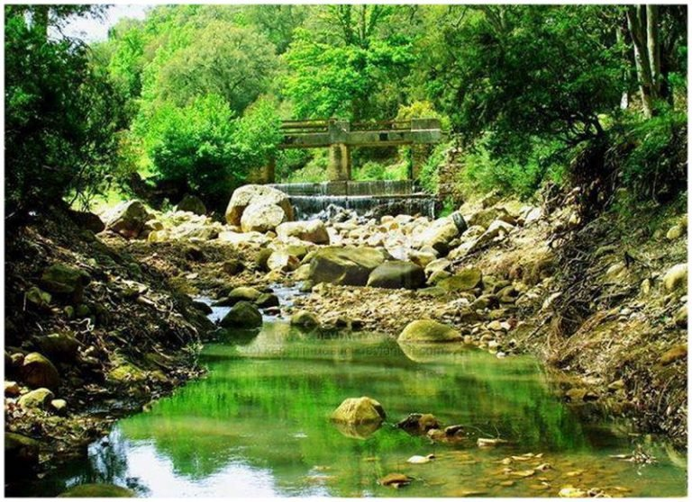
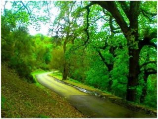

Jendouba, nommée Souk El Arba jusqu’au 30 avril 1964, est une ville du Nord-Ouest de la Tunisie située à 154 kilomètres de Tunis et à cinquante kilomètres de la frontière algéro-tunisienne.
Elle se trouve dans la vallée de la Medjerda au centre d’une plaine fertile.
Chef-lieu du gouvernorat qui porte son nom, c’est la plus importante aire urbaine du Nord-Ouest tunisien.
Avec ses habitations à l’architecture méditerranéenne, aux formes carrées et à un étage, Jendouba, ville de 60 000 habitants, ne songe pas beaucoup au tourisme, malgré sa proximité avec le site romain de Bulla Regia. Une usine industrielle de lait » LAINO
» a remplacé l’ancienne sucrerie (betterave) et la production de levure chimique. Mais ici, c’est l’agriculture qui domine : grandes cultures de blé, pommes de terre, carottes, etc.
Le souk hebdomadaire du mercredi lui confère une authenticité certaine. Les étals envahissent la rue principale et ses alentours, de chaque côté de la voie ferrée qui traverse le village. Outre les commerces habituels, on trouvera à Jendouba un souk aux
chaussures et aux vêtements et, dans un tout autre ordre d’idées, une mosquée au minaret octogonal, typique de l’époque ottomane.
L’économie de Jendouba et de sa région est donc historiquement fondée sur la céréaliculture, l’élevage, les cultures maraîchères et l’arboriculture, même si on assiste depuis la création des zones industrielles de Bulla Regia et El Ertiah à une industrialisation
progressive de Jendouba et son agglomération.
Dans les environs,à 17 km de Ghardimaou en direction du nord-ouest,le parc national El Feidja comporte une zone de protection intégrale de 174 ha pour la sauvegarde du cerf de Berbérie
Visites culturelles et thématiques
Des lieux à voir, des rues à explorer et des expériences emblématiques.
Le site archéologique de Bulla Regia est situé à quelques kilomètres au nord de la ville de Jendouba, il constitue l’une des étapes principales du tourisme culturel dans cette région. Les vestiges qu’il présente
sont les témoins de plus de 17 siècles de l’histoire d’une agglomération fondée par les Numides à la fin du VIe siècle avant J.-C.
Ses vestiges archéologiques qui s’étendent sur plus de 60 ha, offrent au visiteur des témoignages de la période protohistorique (dolmen et hanout) et numide (urbanisme, niveaux d’habitat, céramique et numismatique, ect.), et surtout, de la période romaine
( forum, marché, thermes publics, etc.) . Mais ce qui fait la célébrité du site, ce sont ses demeures patriciennes ornées de très beaux pavements de mosaïques figurées et, surtout, d’étage souterrain, ce qui
est à ce jour sans exemple dans l’architecture domestique antique.
Le site de Dougga est représentatif d’une cité africaine qui a vécu sous les rois numides pendant les premiers siècles de l’Empire romain. Il conserve, dans son intégralité, les vestiges d’une cité antique avec
toutes ses composantes et offre le meilleur exemple connu d’une fondation autochtone et de son évolution à l’époque romaine. Les fouilles archéologiques récentes ont révélé que l’occupation humaine du site remonte
au moins au milieu du deuxième millénaire avant J..C.
La présence de dolmens l’atteste également. Il est probable que le site fut un haut lieu sacré tôt dans l’histoire. La ville est passée tour à tour du domaine de Carthage au royaume de Numidie dont elle fut une des capitales.
Se restaurer
Lieux incontournables où manger, boire et faire la fête.
On a proposé deux destinations pour vous à ne rater
Des lieux à voir, des rues à explorer et des expériences emblématiques.
Ain Drahem
une nature généreuse et splandide
Voir Plus
Ain Drahem s’installe sur une altitude de 800 mètres sur les pentes du Djebel Bir (1014 mètres). Cette montagne fait partie des monts de Kroumirie. Cette région est la zone la plus humide de la Tunisie et elle détiend le record national de pluviométrie
avec 1534 millimètres de précipitations par an et c’est l’une des rares où l’on peut voir de la neigne. Et bien oui, il neige en Tunisie aussi ! et d’ailleurs en hiver un grand nombre de Tunisiens se déplace au nord ouest
du pays rien que pour voir la neige (ne rigolez pas on en voit pas souvent). Le nom Ain Drahem signifie « source d’argent » et évoque les sources d’eau chaude sulfureuses déjà utilisées par les Romains dans l’Antiquité.
Des vestiges de thermes sont ainsi repérables sur le site. AïnDraham est, aussi, une station de villégiature active dès la période du protectorat français. Par ses maisons aux toits de tuiles rouges, par sa forêt enorme
de chênes-liège, sa richesse giboyeuse, notamment en sangliers, elle rappelle un village alpin, apprécié en toutes saisons, pour la chasse, la fraîcheur de son climat, les randonnées pédestres, équestres ou en VTT et le
thermalisme. Ain Draham est aussi la destination des chasseurs par excellence ! Et oui il y a une saison pour la chasse des sangliers en Tunisie et la ville de Ain Drahem est la première destination pour ce type de séjours.
― Gouvernerat de Jendouba
regarder plus de photos
Library
Architect Design

Night Sky
Cinematic
Tea Talk
Composite
Road
Landscape
Sea
Cityscape

Vintage
Cinematic
Tabarka
un milieu magique immanquable
Voir Plus
Une station jeune et pittoresque où se retrouvent les passionnés de plongée sous-marine, de musique et de nature sauvage. La ville est selon beaucoup d’admirateurs, la perle du nord-ouest de la Tunisie avec sa nature généreuse, ses paysages montagneux
et verdoyants. A la rencontre d’une superbe forêt et d’une mer Méditerranée de rêve, se trouve la belle cité de Tabarka, ville célèbre depuis l’antiquité pour la pêche au corail et véritable paradis pour les amoureux de
la mer, de la plaisance, de la plongée, et les passionnés du Golf, de la chasse ou de la randonnée dans les sentiers verdoyants de ses forêts surélevées. Située entre mer et montagne et rendue célèbre par son Festival International
de Jazz. Son slogan « ne pas bronzer idiot » incite et invite des fan de musique du monde entier à pratiquer du tourisme culturel de bon niveau et ne pas uniquement se contenter du soleil et de la plage dorée. ’invitation
comporte naturellement une découverte des richesses historiques et archéologique de la ville. Tabarka dispose de plusieurs points topographiques qui la rendent célèbre et distinguée: sa côte rocheuse qui forme parfois des
aiguilles de pierres et des arches naturelles et les montagnes de Kroumire couvertes d’eucalyptus, de mimosas, de chênes-lièges et de pins qui constituent un magnifique terrain de verdure le rendant ainsi un site d’une
beauté sublime.


.jpg)
.jpg)